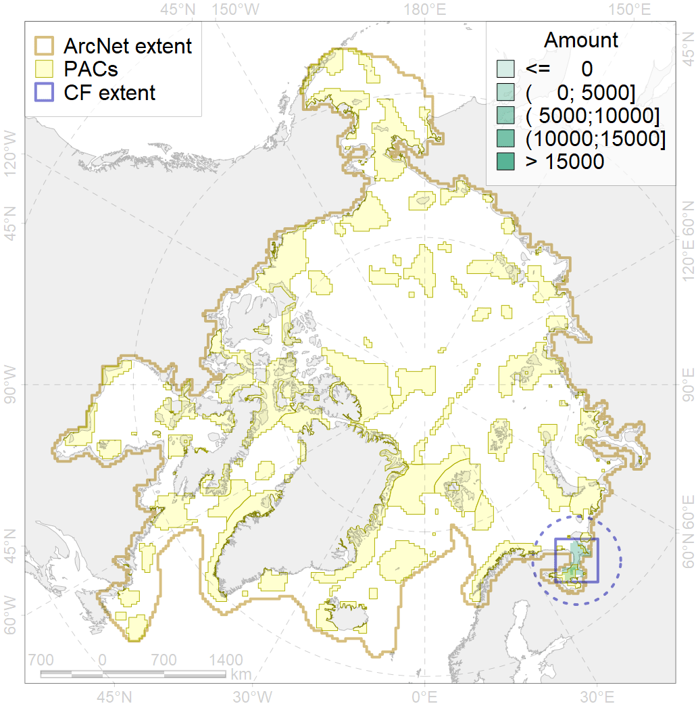
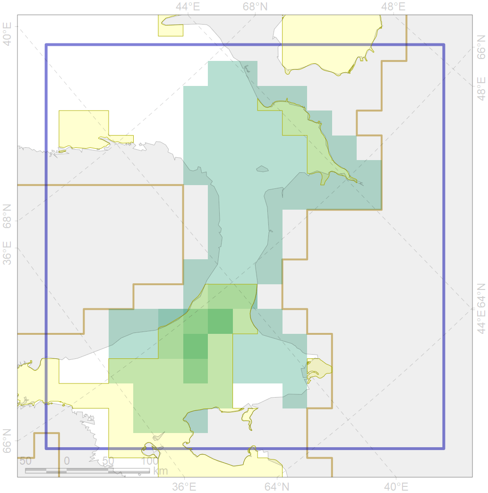

2026

| CF ID | 2026 |
| CF Name | Harp seal whelping areas in the White Sea |
| Time Period | 2009 |
| Source(s) | Egorov et al., 2010 |
| Seasonality | February-March |
| Depth Horizon | 0-150m |
| Methodology | Field surveys |
| Author Name | Irina Trukhanova |
| Notes | |
| Conservation Target Set in the Scenario | 0.72 |
| Conservation Target Achieved in the Scenario | 0.730 (Scenario: 101.4%) |
| PAC ID | Proportion in the PAC | Contribution to ArcNet Target Achievement | PAC’s Contribution to the Achieved Target |
|---|---|---|---|
| 24 | 2.9% | 3.6% | 3.6% |
| 26 | 73.1% | 94.9% | 93.6% |
| inner | 76.0% | 98.6% | 97.2% |
| outer | 24.0% | 2.9% | 2.8% |